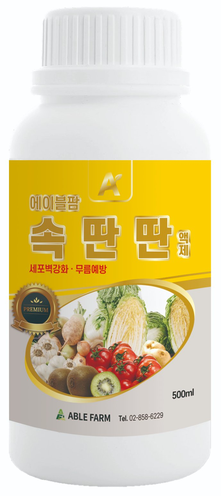

김장 채소 안내 · 한파 대비
김장 무가 먼저 언다 — 영하 1.5도의 경고
한눈에 보기
- 언 피해 온도: 배추 영하 8℃ 안팎, 무 영하 1.5℃ 안팎 농촌진흥청
- 먼저 어는 곳: 땅 위로 솟은 무 어깨
- 얼면: 녹으면서 조직이 물러져 상품성이 떨어짐
- 대비 순서: 중북부 한파 전 수확 → 남부 부직포·비닐 → 얼었으면 녹은 뒤 수확 → 생육 부진 밭 엽면시비
무가 배추보다 훨씬 약합니다
영하 8℃ 안팎김장 배추 언 피해 온도 (농촌진흥청)
영하 1.5℃ 안팎무 언 피해 온도 (농촌진흥청)
같은 밭에 있어도 무는 배추보다 훨씬 낮은 추위에서 먼저 언 피해를 입습니다. 특히 땅 위로 드러난 무 어깨가 찬 공기에 그대로 노출됩니다. 조직 속 물이 얼면서 생긴 얼음 결정이 세포를 손상시키고, 녹은 뒤에는 그 부위가 물러지고 투명하게 변해 상품성이 떨어집니다.
대비 순서
- 중북부 — 한파 전에 수확언 피해를 받기 전에 수확합니다. 배추는 정식 후 60~70일경 결구가 단단할 때가 적기이고, 저장용은 결구가 80~90% 정도 단단할 때 수확합니다. 농촌진흥청
- 남부 — 부직포·비닐을 미리 준비한파 예보가 있으면 바로 덮을 수 있게 부직포·비닐·짚을 준비해 둡니다. 농촌진흥청
- 이미 얼었다면 — 녹은 뒤 수확언 상태로 바로 뽑지 말고, 언 부분이 녹은 뒤 날씨가 풀리면 즉시 수확·출하합니다. 농촌진흥청
- 생육이 더딘 밭 — 엽면시비저온으로 생육이 부진하면 요소 0.2%액(물 20ℓ당 40g)이나 제4종 복합비료를 잎에 뿌려 생육을 돕습니다. 농촌진흥청
- 저장 — 0~3℃, 습도 90~95%저장 배추는 겉잎을 5~6매(김치 가공용 8~9매) 정리하고 0~3℃, 습도 90~95%로 보관합니다. 농촌진흥청
겨울 김장 채소 영양 관리

임팩트원
액상 4종복합비료 (엽면시비용)
인산·가리·고토에 붕소·아연·망간과 L-아미노산을 더한 4종복합 엽면시비용 액상비료로, 저온 등 이상기후로 생육이 더뎌진 밭의 회복을 돕습니다. 엽면살포 1,000배.

속딴딴
미량요소복합 액제 · 질산태 칼슘·붕소
칼슘·붕소가 세포벽을 튼튼하게 해 배추 등 엽채류의 물러짐을 줄이고 저장·수송성을 높입니다. 500~1,000배, 7~10일 간격.
꼭 알아두세요. 엽면시비는 추위를 막아 주지 않습니다. 언 피해 예방은 한파 전 수확과 피복이 기본이고, 영양 관리는 그 뒤 생육 회복을 돕는 보조 수단입니다.
자주 묻는 질문
김장 배추와 무는 몇 도에서 어나요?
배추는 영하 8℃ 내외, 무는 영하 1.5℃ 내외에서 언 피해를 받습니다(농촌진흥청). 무가 훨씬 약하므로 한파 예보가 있으면 무부터 챙기세요.
무나 배추가 얼었으면 바로 뽑아야 하나요?
언 상태에서 바로 뽑지 말고, 언 부분이 녹은 뒤 날씨가 풀리면 즉시 수확·출하합니다. 얼었다 녹은 조직은 물러지기 쉬우므로 오래 두지 않습니다.
한파에 대비하려면 어떻게 하나요?
중북부는 언 피해 전에 수확하고, 남부는 부직포나 비닐을 미리 준비해 한파가 오면 덮어 줍니다.
추위로 생육이 더딘 밭은 어떻게 관리하나요?
요소 0.2%액이나 제4종 복합비료를 엽면살포해 생육을 돕습니다(농촌진흥청). 임팩트원은 4종복합 엽면시비용 액상비료로 이상기후 뒤 회복 관리에 쓸 수 있습니다.
근거 자료
- 농촌진흥청, 주간농사정보 제44호 (2026.11.2.~11.8.) — 가을배추·무 저온 대비(언 피해 온도 배추 -8℃·무 -1.5℃ 내외, 수확 적기, 저장 조건, 생육 부진 엽면시비) — 농사로
- 농촌진흥청, 슬기로운 겨울나기 농작물 관리 요령(카드뉴스) — 겨울배추·무 피복 준비, 언 피해 시 녹은 뒤 수확·출하, 저온 장해 엽면살포
- 영상: 에팜티비 「김장 배추·무 언 피해」 — YouTube Shorts